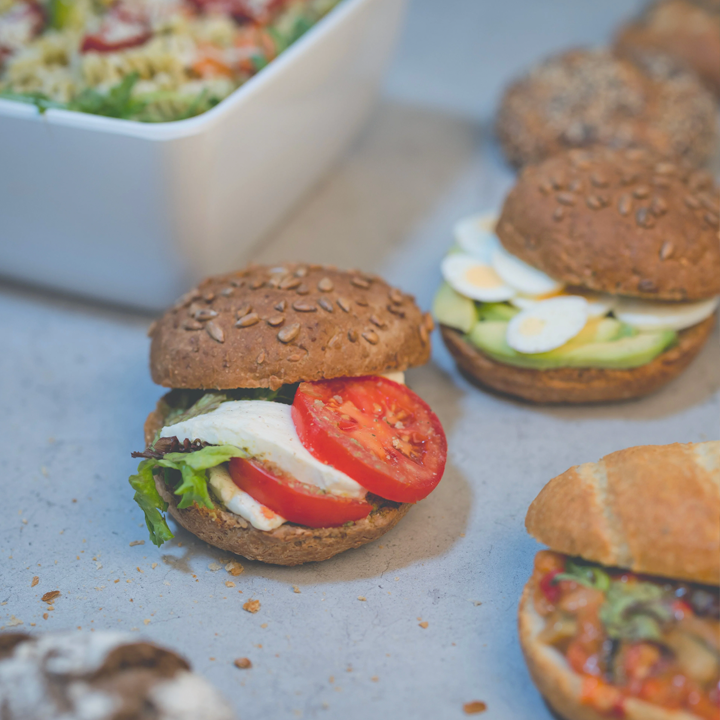
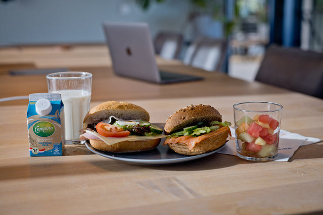
Lunch op het werk
Belegde broodjes met verse groente, zalm, kaas of ham, met melk, sap en fruit erbij. Wij maken het klaar, u hoeft alleen nog aan tafel.
Lunch bestellen: 033 461 2352Bakker en traiteur in Amersfoort
Lunch voor op het werk, hapjesschalen, gebak en taarten. Vers gemaakt aan de Radonweg, voor op kantoor, op een feestje of gewoon thuis.
4.8 op Google, uit 119 reviews
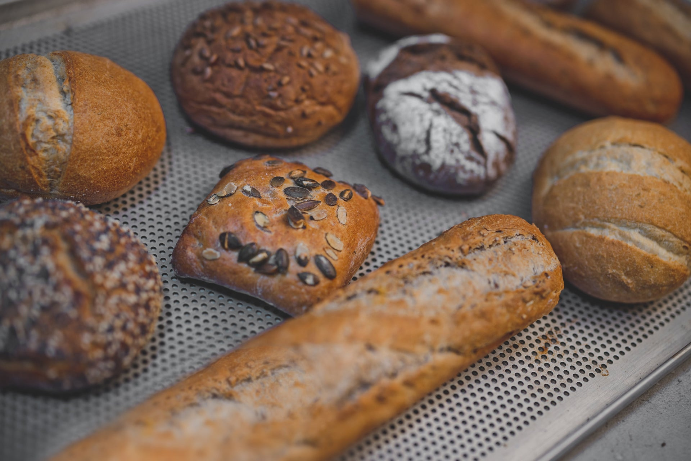
Van een broodje voor één tot schalen voor de hele afdeling. Vertel ons wat u nodig heeft, dan maken wij het klaar.


Belegde broodjes met verse groente, zalm, kaas of ham, met melk, sap en fruit erbij. Wij maken het klaar, u hoeft alleen nog aan tafel.
Lunch bestellen: 033 461 2352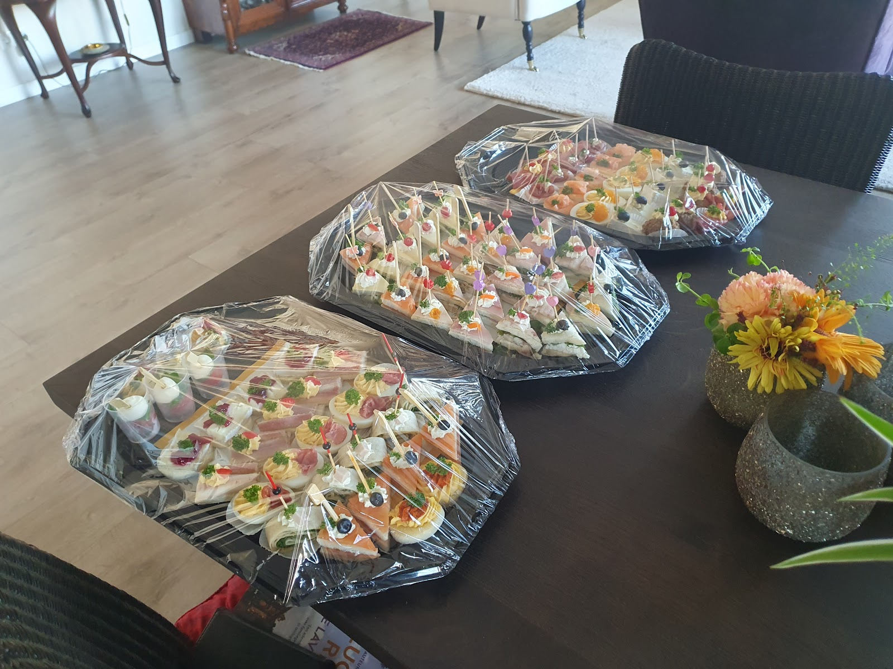
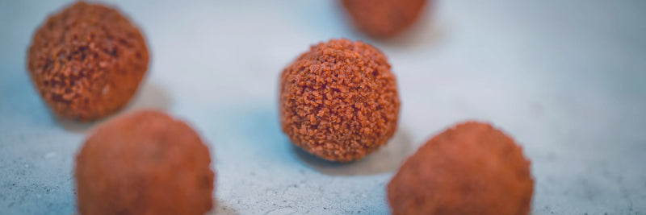
Schalen vol gevulde eieren, zalm, sandwiches en spiesjes, keurig opgemaakt en klaar om neer te zetten. En bitterballen erbij voor de borrel.
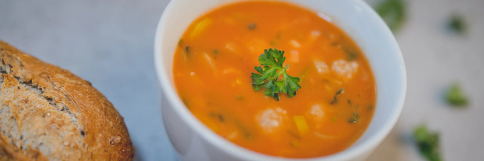
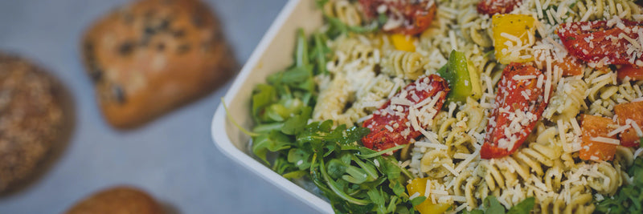
Tomatensoep met balletjes en een frisse pastasalade. Lekker bij de lunch, of als warme aanvulling op een koude dag.
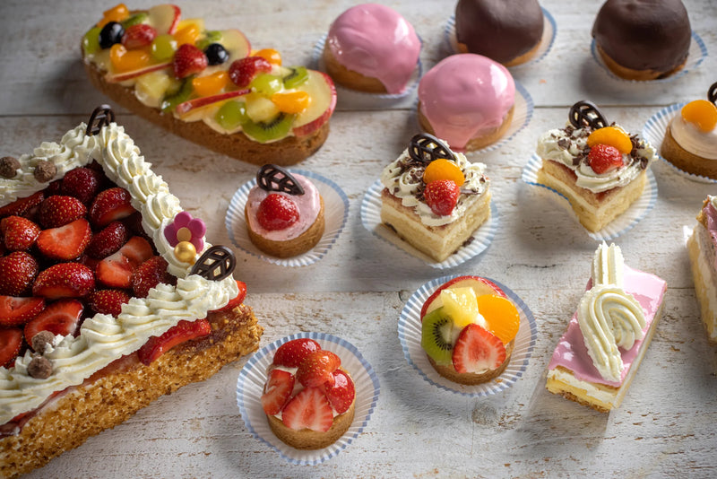
Vruchtenvlaai, aardbeienschnitt, taartjes en koeken. Voor een verjaardag, een geboorte of gewoon bij de koffie. Ook met een naam of uw eigen ontwerp.
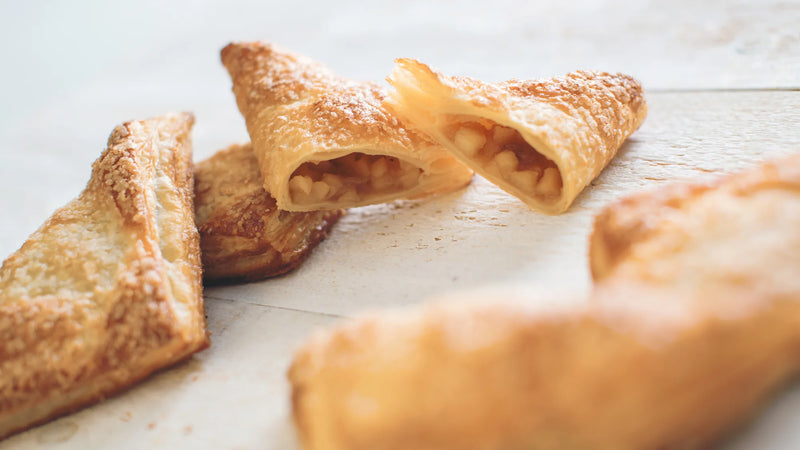
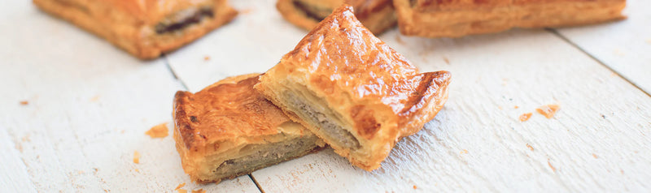
Vers brood en broodjes, appelflappen en saucijzenbroodjes. Simpel, eerlijk en precies zoals het hoort.
Een kraamtraktatie, een taart op het werk, kerstbrood voor het ontbijt. In hun eigen woorden.
4.8 uit 119 Google-reviews
Kraamtraktatie
"Wij bestelden Spakenburgs hart met de naam van ons kindje erop als kraamtraktatie. Super leuk en makkelijk om uit te delen en blijft lang goed. En, niet onbelangrijk, smaakt heerlijk!"
Geboortetaart, eigen ontwerp
"Ik laat voor elke geboorte van onze kleinkinderen een geboorte taart maken. N.a.v. een eigen ontwerp. Nu kon ik niet meer terecht bij de bakker waar ik het voorheen liet maken. Ik kwam online terecht bij “warme Bakker de Graaf” . Wat is dat goed bevallen ! Makkelijk te bestellen, en de volgende dag al op tijd in huis."
Verjaardagstaart, bezorgd op het werk
"Een verjaardags taart besteld en laten bezorgen op mijn werk, zelf lag ik ziek op bed maar kreeg een foto toegestuurd met blije gezichten."
Service
"Prima, hartstikke goede service en belangrijker… het smaakte uitstekend !"
Kerstbrood
"Mmmm, wat een lekker kerstbrood! De spijs proeft lekker en we proeven ook een vleugje citroen, lekker fris van smaak. Hij was bestemd voor het kerstontbijt, maar zoals je ziet... we konden er niet afblijven :-)"
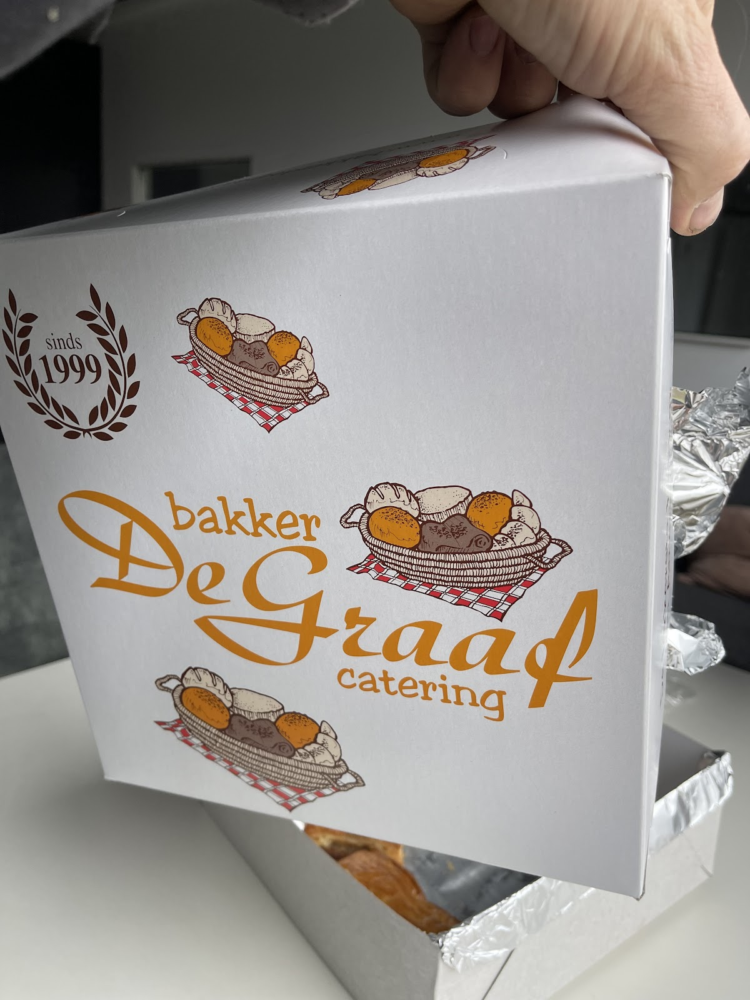
De mand op het geruite kleedje staat op elke doos die bij ons de deur uit gaat. Komt hij binnen op kantoor of bij u thuis, dan weet iedereen wat er in zit: iets lekkers van Bakker de Graaf.
Zo bestelt uWe zijn bereikbaar op werkdagen van 07:00 tot 13:00. Mailen kan natuurlijk ook.
Bel 033 461 2352| Maandag tot en met vrijdag | 07:00 tot 13:00 |
| Zaterdag en zondag | Gesloten |